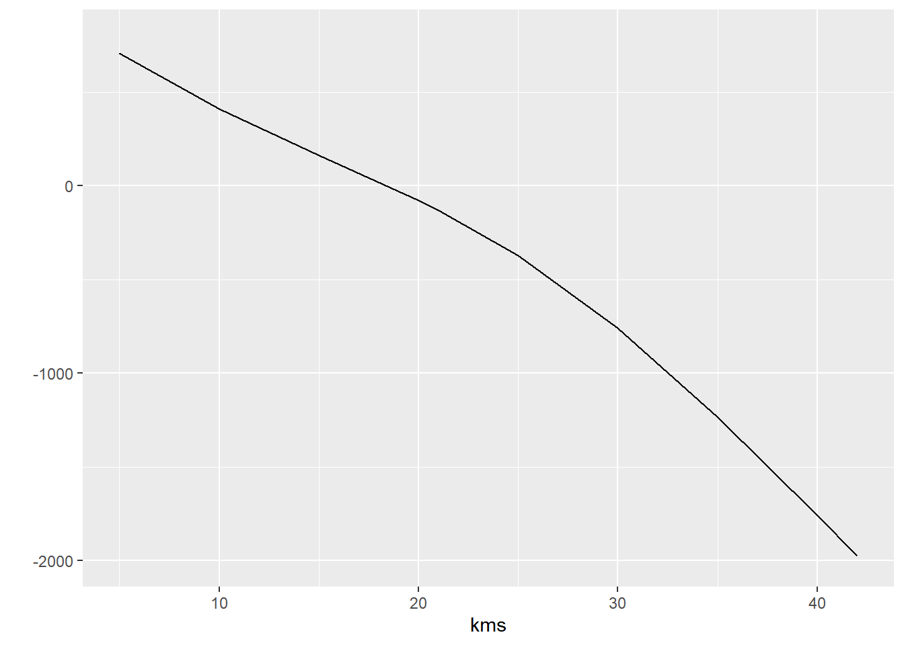

Os modelos lineares funcionais são uma classe de modelos estatísticos que lidam com dados funcionais, ou seja, observações que são representadas como funções contínuas ao invés de valores numéricos isolados. Esses modelos são amplamente utilizados para análise de dados funcionais em várias áreas, como biologia, economia, engenharia e ciências da saúde.
A ideia básica por trás dos modelos lineares funcionais é estender a estrutura dos modelos lineares tradicionais para acomodar dados funcionais. Em um modelo linear funcional, a variável de resposta é modelada como uma combinação linear de funções base, onde os coeficientes de regressão indicam o efeito das funções base na resposta. Essas funções base podem ser pré-determinadas, como funções polinomiais ou splines, ou podem ser obtidas de forma adaptativa a partir dos próprios dados, por exemplo, usando a Análise de Componentes Principais Funcionais (fPCA).
Ajustar um modelo linear funcional envolve estimar os coeficientes de regressão e possivelmente outros parâmetros do modelo, como a variância do erro. Diversas técnicas de estimação estão disponíveis para modelos lineares funcionais, incluindo mínimos quadrados ponderados, estimação por máxima verossimilhança e métodos baseados em penalização.
Uma vantagem dos modelos lineares funcionais é que eles permitem modelar a estrutura temporal dos dados e capturar a variabilidade e dependência funcional ao longo do tempo. Isso torna esses modelos particularmente adequados para dados longitudinais ou séries temporais, onde a variação e a relação entre as observações podem mudar ao longo do tempo.
Em resumo, os modelos lineares funcionais são uma poderosa ferramenta estatística para análise de dados funcionais, permitindo modelar e interpretar relações entre variáveis em um contexto funcional e temporal.
Tópicos de hoje:
Regressão de escalar em função - SoF (pfr)
Regressão de componentes principais funcionais (FPC)
Modelo linear funcional com base restrita
Gráficos interativos (plot_shiny) para regressão de escalar em função
Função em escalar - FoS (pffr)
Função em função - FoF (pffr)
Modelos lineares funcionais simultâneos
[Código fornecido por cortesia de Arnab Maity]
1 Scalar-on-function regression model
“Scalar-on-function regression model” pode ser traduzido como “modelo de regressão escalar em função”. Nesse contexto, “scalar” se refere a um valor único, enquanto “function” se refere a uma função matemática que pode variar de acordo com uma variável independente. Portanto, um “scalar-on-function regression model” é um modelo de regressão que visa prever um valor único (escalar) com base em uma função variável.
onde Xi é modelado usando fPCA, \(X_i = \mu(t) + \sum_{i=1}^{n} \sum_{k=1}^{\infty} \xi_{ik}\phi_{k}(t)t)\)
Lembrando que fPCA se refere à Análise de Componentes Principais Funcionais (Functional Principal Component Analysis) e \(\mu(t)\) é a média da função, ξᵢₖ são os coeficientes de PCA e \(\phi_k(t)\) são as funções de base de PCA.
1.1 Regressão de componentes principais funcionais (FPC)
Aqui ilustramos o ajuste de regressão linear funcional assumindo \(\beta(t) = \sum_{i=1}^{n} \sum_{k=1}^{\infty} \beta_{k}\phi_{k}(t)\). Primeiro carregamos o conjunto de dados e definimos a resposta e a covariável.
Primeiro passo
O primeiro passo da estimativa é executar o fPCA na covariável funcional usando um dos softwares que implementam o fPCA (módulo 3); por exemplo, fpca.ssvd, fpca.face e fpca.sc no pacote refund / pca.fd no pacote fda / fpca.mle no pacote fpca / PACE no Matlab.
mu_hat %>%as_tibble_col(column_name ="mu.hat") %>%mutate(effect_Plus = mu.hat + effect,effect_less = mu.hat - effect,kms = kms ) %>%pivot_longer(cols =1:3) %>%group_by(kms) %>%ggplot(aes(kms, value, group = name, color = name))+geom_line()+labs(x="km",y="", title ="fCP-1")
(Atividade para fazer em casa) Experimente o gráfico interativo dos resultados do fPCA (plot_shiny(fpca_res)) e interprete. (Módulo 3-3)
Passo dois
Agora, usando a matriz de escores estimados, faça uma regressão linear múltipla no vetor de respostas escalares \(Y\) (tempo de conclusão). Obtenha os coeficientes estimados, \(\beta_j\)’s.
out =lm(final_time ~ scr) ## Multiple linear regression# summary(out)beta_hat = out$coefficientsbeta_hat
Call:
lm(formula = final_time ~ scr)
Residuals:
Min 1Q Median 3Q Max
-176.316 -34.756 2.237 29.209 177.537
Coefficients:
Estimate Std. Error t value Pr(>|t|)
(Intercept) 9013.123 4.523 1992.94 <2e-16 ***
scr1 424.569 4.796 88.53 <2e-16 ***
scr2 -894.118 22.536 -39.67 <2e-16 ***
---
Signif. codes: 0 '***' 0.001 '**' 0.01 '*' 0.05 '.' 0.1 ' ' 1
Residual standard error: 55.39 on 147 degrees of freedom
Multiple R-squared: 0.9846, Adjusted R-squared: 0.9844
F-statistic: 4706 on 2 and 147 DF, p-value: < 2.2e-16
Uma vez que o fPCA selecionou os três primeiros componentes principais com base na porcentagem especificada da variância explicada, temos aqui três coeficientes de base correspondentes.
Agora, para reconstruir a função do coeficiente de regressão,
beta_fn_hat = efn %*%as.matrix(beta_hat[-1], col =1) cbind(kms,beta_fn_hat) %>%as_tibble() %>%ggplot(aes(kms,V2))+geom_line()+ylim(c(-2000,800))+ylab("")

Como podemos dar sentido ao coeficiente? Vamos nos concentrar em analisar três perfis de velocidade aleatórios:
Existem várias funções integradas que podem ajustar um modelo linear funcional usando fPCA: a função PACE-REG no pacote Matlab PACE; a função pfr no pacote refund; a função fRegress no pacote fda.
Vantagens: computacionalmente simples e aplicável a qualquer design de amostragem. Desvantagens: forte pressuposto de que \(\beta(\cdot)\) e \(X(\cdot)\) estão no mesmo espaço e têm uma suavidade similar.
2 Modelo linear funcional com base mista
Para superar algumas limitações do método anterior, Goldsmith et al. (2011) propuseram modelar a função de coeficiente \(\beta(\cdot)\)) usando uma função de base truncada; no entanto, outras funções de base também são aplicáveis.
Lembre-se de que, ao modelar \(X(\cdot)\) usando eigenfunções e \(\beta(\cdot)\) usando funções de base pré-definidas, temos -
\[
Y_i = \alpha + \xi^T_i J \beta,
\]
onde \(\boldsymbol{\xi}_i = [ \xi_{i1}, \xi_{i2}, \ldots, \xi_{iK} ]^T, J\) é uma matriz \(K \times L\) com o elemento \((k,ℓ)-th\) dado por \(J_{k\ell} = \int \phi_k(t)\theta_\ell(t) dt\), e \(\boldsymbol{\beta} = [ \beta_1, \beta_2, \ldots, \beta_K ]^T\).
Este modelo pode ser ajustado usando a função pfr no pacote refund. (Novamente, usamos “milhas por minuto” e “tempo de conclusão” como covariável e resposta)
X <-as.matrix(speed) # functional covariateY <- final_time # scalar responsemyDat <-data.frame(X, Y)fit <-pfr(Y ~lf(X, k =10, bs ="cr"), method ="REML", data = myDat)coef <-coef(fit)cbind(coef$X.argvals, coef$value) %>%as_tibble() %>%ggplot(aes(V1,V2))+geom_line()+labs(x ="km", y=expression(paste(beta(t))), title ="função de coeficiente estimado")
O comando plot(fit) plota a função de coeficientes estimada com intervalo de confiança ponto a ponto, o que NÃO é útil para inferência! Uma possível maneira de construir um intervalo de confiança conjunto é por meio do método de bootstrap.
onde \(F(\cdot,\cdot)\) é uma função suave bivariada desconhecida;
#fit <- pfr(Y ~ af(X, k = c(10, 8), bs = "cr"))fit <-pfr(Y ~af(X, k =c(10, 8), bs ="cr"))coef <-coef(fit)plot(fit$fitted.values,Y)abline(a =0, b =1)
3 Regressão de Função em Escalar (FoS)
A regressão de função em escalar (FoS) é uma abordagem estatística que lida com a relação entre uma função e uma variável escalar. Nesse tipo de análise, a variável de interesse é uma função contínua ao longo de uma dimensão, como o tempo, enquanto a variável preditora é uma única medida numérica.
A FoS tem várias aplicações em diferentes campos, como medicina, economia, ecologia e engenharia. Por exemplo, na medicina, pode ser usado para estudar a relação entre o perfil de expressão gênica (função) e uma variável clínica (escalar), como a gravidade de uma doença.
Uma das principais vantagens da FoS é que ela permite modelar a relação entre a função e a variável escalar de forma flexível, capturando padrões complexos e não lineares. Isso é especialmente útil quando a relação entre as duas variáveis é esperada para variar ao longo da dimensão da função.
Existem várias abordagens e métodos para realizar a regressão de função em escalar, incluindo o uso de bases funcionais, como splines, wavelets e Fourier, além de técnicas específicas, como regressão de spline penalizada e modelos de mistura.
Em resumo, a regressão de função em escalar é uma ferramenta poderosa para explorar e modelar a relação entre funções e variáveis escalares, permitindo uma análise mais detalhada e flexível dos dados em várias áreas de estudo.
Neste estudo, serão utilizados dados meteorológicos do Canadá para fins de análise.
data("CanadianWeather")# Temperature datadaily_avg_temp <- CanadianWeather$dailyAv %>%as_tibble() %>% dplyr::select(contains("Temperature")) %>% janitor::clean_names()# temperature plotdaily_avg_temp %>%mutate(day =1:365 ) %>%pivot_longer(cols =contains("Temperature")) %>%group_by(day) %>%ggplot(aes(day,value, group = name, color = name)) +geom_line()+theme(legend.position ="none" )
E ajustamos o modelo de regressão de função em escalar usando a função pffr. (A função pffr no pacote refund pode ajustar qualquer modelo linear funcional com resposta funcional.)
fit <-pffr(Y ~ X, data = myDat)yhat <-predict(fit, newdata = myDat) Rsq_t <-1-colSums((Y - yhat)^2) /colSums((Y -colMeans(Y))^2)mean(Rsq_t)
beta0.hat <- coef$smterms$`Intercept(yindex)`$coefbeta1.hat <- coef$smterms$`X(yindex)`$coeftibble(index = beta0.hat$yindex.vec, value = beta0.hat$value) %>%ggplot(aes(index,value))+geom_line()+labs(x ="day", y =expression(paste(beta[0](t))), title ="")
tibble(index = beta1.hat$yindex.vec, value = beta1.hat$value)%>%ggplot(aes(index,value))+geom_line()+labs(x ="day", y =expression(paste(beta[1](t))), title ="")
Outras funções que podem ajustar regressão de função em escalar são bayes_fosr e fosr no pacote refund e fRegress no pacote fda. Note que a seleção dos parâmetros de suavização não está implementada na função fRegress. Enquanto isso, fosr pode receber tanto uma matriz como um objeto fd do pacote fda, além de poder selecionar parâmetros de suavização ótimos usando diversos métodos, como GCV, REML, ML, entre outros (?fosr).
bayes_fosr utiliza estimação Bayesiana e plot_shiny recebe a saída de bayes_fosr para plotagens interativas.
#fit <- bayes_fosr(Y ~ X)#plot_shiny(fit)
Isso retorna cinco abas com gráficos interativos:
Aba 1: Dados Observados (resposta observada colorida com base na covariável selecionada pelo usuário.)
Aba 2: Valores Ajustados (curvas previstas com diferentes valores da covariável)
Aba 3: Funções de Coeficientes (funções de coeficientes estimadas)
Aba 4: Resíduos (curvas de resíduos coloridas com base em sua profundidade)
(Atividade em grupo) Explore os gráficos interativos.
4 Regressão de função em função (FoF) - Modelo Concorrente
A regressão de função em função (FoF) é uma abordagem estatística que permite modelar a relação entre duas funções contínuas ao longo de uma dimensão comum. No contexto do modelo concorrente, a FoF é usada para investigar a relação entre uma função resposta e uma função preditora, ambas observadas na mesma dimensão temporal.
No modelo concorrente, a função resposta é modelada como uma combinação linear das funções preditoras, ponderadas por coeficientes de regressão desconhecidos. Esses coeficientes indicam como a função resposta é influenciada pelas diferentes características da função preditora.
Para ajustar o modelo FoF concorrente, são utilizadas técnicas estatísticas como mínimos quadrados parciais ou máxima verossimilhança. O objetivo é estimar os coeficientes de regressão para descrever a relação entre as funções resposta e preditora.
O modelo FoF concorrente pode ser aplicado em várias áreas, como ciências ambientais, medicina, economia e engenharia, onde existem dados funcionais coletados ao longo do tempo. Ele fornece uma abordagem flexível para modelar a complexa relação funcional entre duas variáveis observadas em uma dimensão comum.
relaciona a temperatura média diária no ponto de tempo atual t com a precipitação média diária no mesmo ponto de tempo t.
data("CanadianWeather")day <-1:365# selecionando os dados de temperatura de todas as estações - 365 diasY <-t(as.matrix(CanadianWeather$dailyAv[,,1]))# criando Fpca com os dados de precipitaçãofit <-fpca.sc(t(as.matrix(CanadianWeather$dailyAv[,,2])), pve=0.99)#selecionando os dados ajustados criados pela FpcaX <- fit$Yhat myDat <-list()myDat$X <- XmyDat$Y <- Y# Criando um modelo de regressão usando pffr functionfit <-pffr(Y ~ X, data = myDat)yhat <-predict(fit, newdata = myDat)Rsq_t <-1-colSums((Y - yhat)^2) /colSums((Y -colMeans(Y))^2)mean(Rsq_t) # erro médio quadratico
[1] 0.7018062
Este modelo explica cerca de 77% da variabilidade total. As funções de coeficiente estimadas são:
coef <-coef(fit)
using seWithMean for s(yindex.vec) .
beta0.hat <- coef$smterms$`Intercept(yindex)`$coefbeta1.hat <- coef$smterms$`X(yindex)`$coeftibble(index = beta0.hat$yindex.vec, value = beta0.hat$value) %>%ggplot(aes(index,value))+geom_line()+labs(x ="day", y =expression(paste(beta[0](t))), title ="")
tibble(index = beta1.hat$yindex.vec, value = beta1.hat$value)%>%ggplot(aes(index,value))+geom_line()+labs(x ="day", y =expression(paste(beta[1](t))), title ="")
A função fRegress no pacote fda também ajusta a regressão funcional concorrente, mas a seleção dos parâmetros de suavização não está implementada na função.
Resumo: - Regressão escalar em função - Dados de maratona - Gráficos interativos (plot_shiny) - Regressão de função em escalar e regressão de função em função - Dados meteorológicos do Canadá - Precipitação média como covariável escalar - Precipitação e temperatura como função de localização
Atividades em grupo e individuais: - Analise os dados de DTI usando os modelos de regressão que aprendemos hoje. - Qual é a associação entre os perfis de FA e as pontuações de PASAT de pacientes com esclerose múltipla em sua primeira visita? (regressão escalar em função) - O conjunto de dados também inclui rcst - perfis de FA coletados do trato corticospinal direito. Como essas medidas se relacionam com as medidas de FA ao longo de CCA? - Ajuste um modelo linear funcional com FA ao longo de CCA como resposta e pontuações de PASAT como covariável; experimente diferentes funções R. Discuta os gráficos interativos dos resultados da regressão de função em escalar.
Vamos usar o conjunto de dados DTI para ilustrar dados funcionais observados longitudinalmente amanhã. Tente plotar vários perfis observados de um paciente com EM selecionado aleatoriamente. (Atividade individual)